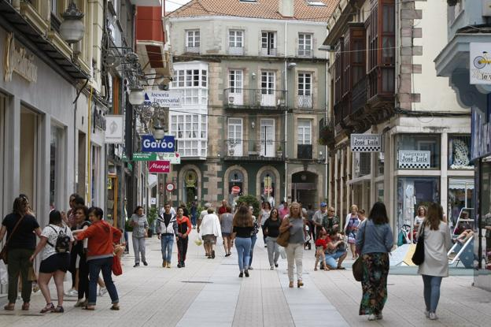

<table border="2"
</table>
<table border="1"
<P ALIGN=left><caption><H1> TORRELAVEGA </H1><caption>
<DIV ALIGN=left>Torrelavega es un municipio y ciudad del norte de Espa&ntilde;a. La ciudad es de car&aacute;cter industrial y comercial, siendo el segundo n&uacutecleo urbano m&aacute;s relevante de la comunidad aut&oacute;noma de Cantabria por detr&aacute;s de la capital auton&oacute; mica Santander.</DIV>
   
</tr>
<table border="2"

<TABLE WIDTH="500" HEIGHT="300">

<tr>
  <td colspan="2"><CENTER><H1>TORRELAVEGA</H1></td>
</tr>

<tr>
  <td><p>solvay<p><p>la lechera<p><p>avenida españa</p></td>
  <td>C</td>
</tr>
</table>
